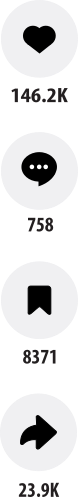
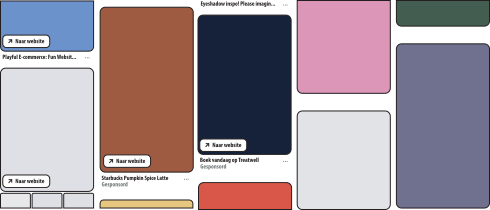

Likes, volgers en weergaven
Om ervoor te zorgen dat de app of website echt alleen om creativiteit draait, zouden er geen likes zijn. In mijn ogen doen deze er niet toe, je deelt je werk om mensen te inspireren, iets te leren of om je vooruitgang te laten zien. Niet om zoveel mogelijk likes te krijgen. In deze omgeving zou je wel mensen moeten kunnen volgen om te zien wat hun volgende project wordt, maar deze volgers zouden niet openbaar zijn net zoals de hoeveelheid weergaven. Zo wordt de motivatie om kunst te delen niet vanuit een oogpunt van zo veel mogelijk interactie behalen. Wel zou er een knop zijn om posts op te slaan zodat mensen later video’s terug kunnen vinden, en zou reacties achterlaten mogelijk zijn om zo creatievelingen met elkaar in contact te brengen.

AI-gebruik
De eigen gemaakte beelden zouden niet vervangen moeten worden door AI, daarom moet er regulatie komen op AI-beelden. Om ervoor te zorgen dat er alleen echte projecten op het platform staan waar mensen hard aan hebben gewerkt en niet alleen een tekstje aan een AI-model gestuurd hebben, moeten er regels komen omtrent AI. Zo zijn beelden die compleet door AI gemaakt zijn niet toegestaan. Hier zou dan op gecontroleerd worden, eerst zal de maker een waarschuwing krijgen en word de post verwijderd. Als de maker weer de fout in gaat zal het account verwijderd worden.
Reclame
Bovendien zou het platform draaien op donaties in plaats van op reclames. Zo ligt de focus op de creativiteit en niet op geld verdienen en worden de gebruikers van de app niet afgeleid. Om dit idee in stand te houden zullen ook samenwerkingen tussen makers en bedrijven niet toegestaan zijn. Ook om ervoor te zorgen dat de focus op creativiteit delen ligt en niet op het verdienen van geld.
